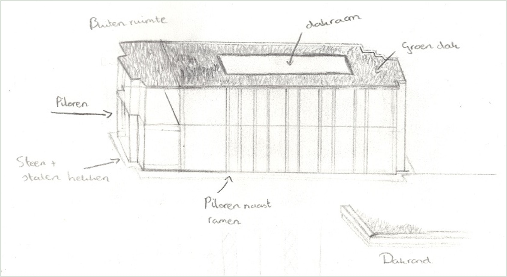
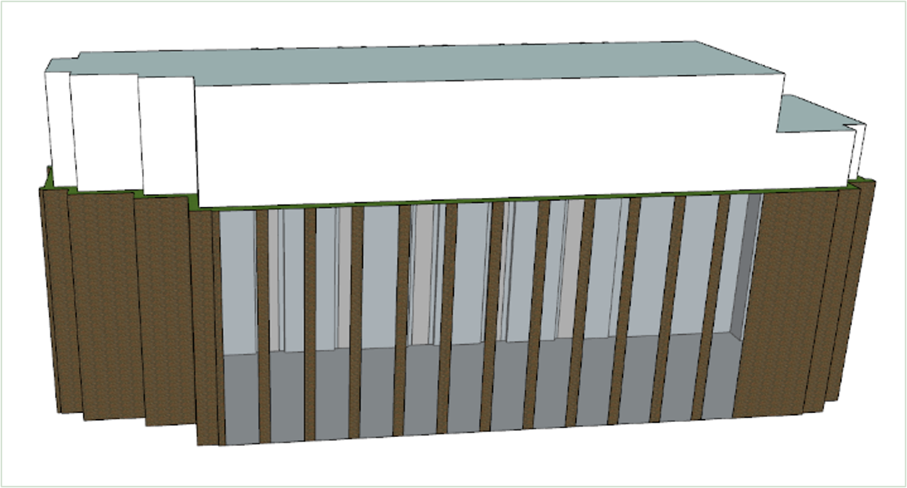
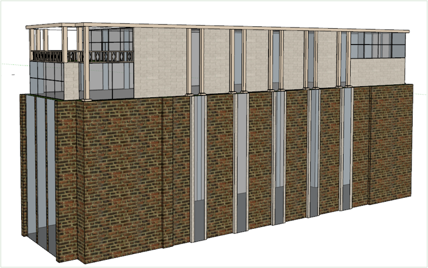
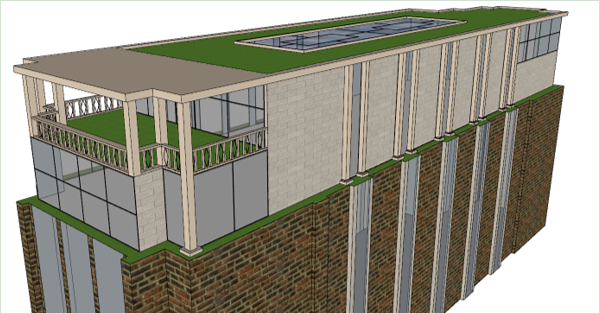
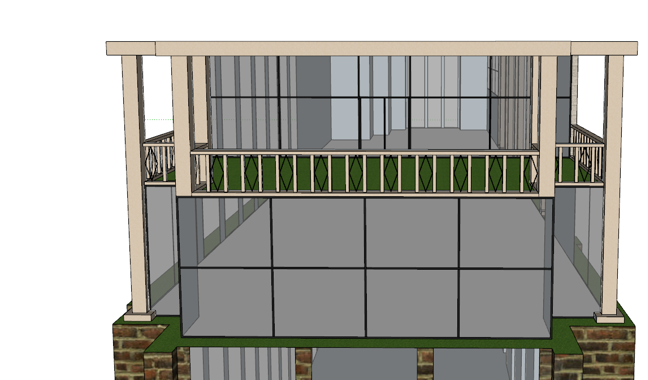
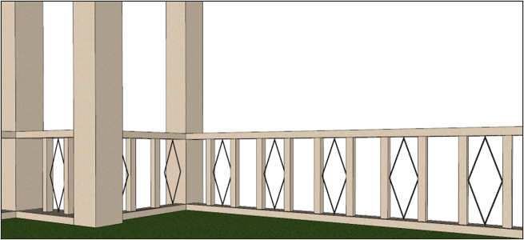

Optopping Hogeschool Rotterdam IGO
+ renovatie A-Vleugel
G.J. de Jonghweg, 4-6
25-03-2022
Het project
De A vleugel, bestemd voor de opleiding bouwkunde, van de Hogeschool Rotterdam kreeg in dit project een renovatie qua indeling van het gebouw. Hierbij zou de A vleugel een apart gedeelte worden afgescheiden van de andere vleugels, alleen de ingang kon wel behouden blijven waar deze lag.
Eerst moest er een geschiedenis studie en een locatiestudie gedaan worden. Daarna moest er nog een referentieonderzoek gedaan worden en kon en er een Programma van Eisen opgesteld worden. Het PvE bestond uit eisen van de opdracht gever, eisen uit het bouwbesluit en eisen die ik zelf had opgesteld aan de hand van onderzoek naar de plattegrond van het al reeds bestaan gebouw die daarna verwerkt werd in een ruimtestaat.
Mijn visie
Voor de optopping wou ik dat het er meer uit zou springen dan dat het een geheel zou vormen met het al bestaande gebouw. Ook wou ik dat het zou gaan aansluiten op de trappen die gemaakt zijn van opstopping natuursteen, dit is omdat dit één van de eerste dingen was dat eruit sprong voor mij toen ik voor het eerst binnen kwam. Ik vond het goed passend voor de kant van bouwkunde om dit te hebben en ook mooi passen bij het gebruik van veel glas en staal binnen. Ten slotte wou ik dat het gebouw meer mindervalide vriendelijk was. Dit had ik gedaan door grotere liften en mindervalide toiletruimtes te plaatsen.
Uitgangspunten voor het ontwerp
- Maximaal 2 verdiepingen mogen erbij als optopping
- Veel gebruik van glas
- Het ontwerp maakt een koppeling tot de geschiedenis van het gebouw
- De optopping moet zich onderscheiden van het al reeds bestaande gebouw





